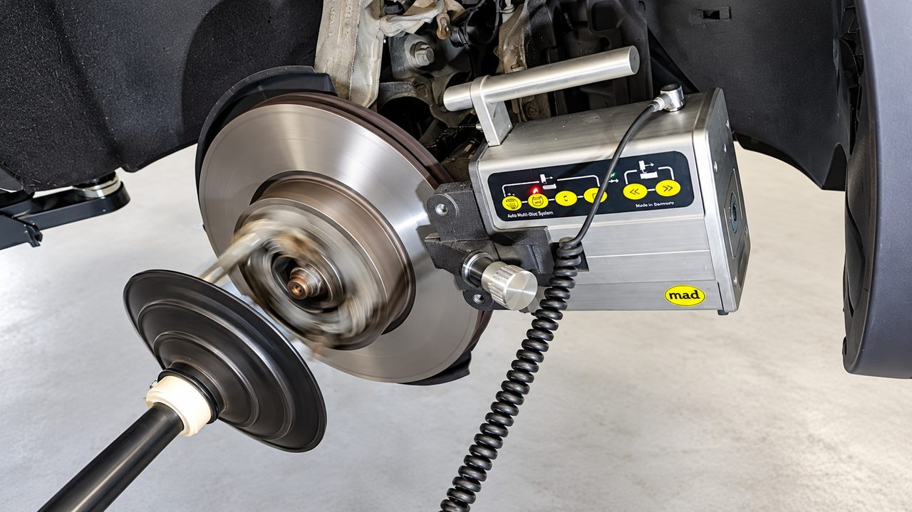

Oprava brzdových kotoučů

J&S servis ve Statenicích nabízí odborné soustružení předních brzdových kotoučů přímo na vozidle pomocí specializovaného zařízení MAD, bez nutnosti demontáže kotoučů z nábojů kol.
Tato technologie umožňuje obrábění kotoučů v jejich skutečné montážní poloze a při splnění technických podmínek pomáhá odstranit nerovnosti brzdných ploch a omezit házivost sestavy kotouče a náboje.
- Soustružení přímo na vozidle zařízením MAD
- Kontrola házivosti náboje úchylkoměrem
- Měření bodu varu brzdové kapaliny v ceně

Kontrola před soustružením
Před zahájením práce provádíme:
- Měření házivosti náboje kola úchylkoměrem
- Kontrolu házivosti a tloušťky brzdového kotouče
- Posouzení technického stavu kotouče a jeho vhodnosti k obrábění
- Kontrolu poškození, opotřebení a minimální přípustné tloušťky kotouče po obrábění
Součástí služby je také měření bodu varu brzdové kapaliny.
Podmínky a omezení
Soustružíme výhradně přední brzdové kotouče.
Neprovádíme obrábění karbon-keramických, vrtaných ani drážkovaných brzdových kotoučů.
Soustružení provádíme pouze tehdy, pokud to umožňuje konstrukce brzdové soustavy, technický stav kotouče, technologické podmínky výrobce a možnosti použitého zařízení.
U elektrických a hybridních vozidel posuzujeme možnost obrábění individuálně podle konkrétního modelu, konstrukce vozidla a servisních předpisů výrobce.
Součástí opravy je výměna brzdových destiček za nové, odpovídající konkrétnímu vozidlu a brzdové soustavě.
Cena soustružení
1 přední brzdový kotouč: Ceník služeb.
Oba přední brzdové kotouče: Ceník služeb.
Brzdové destičky a práce spojené s jejich výměnou se účtují samostatně.
Specializujeme se na vozidla Volkswagen, Audi, Škoda, SEAT a CUPRA.
Před objednáním
Házivost je odchylka při otáčení kotouče a související sestavy. Vibrace při brzdění mohou mít i jiné příčiny. Pokud stav nebo konstrukce kotouče obrábění neumožňují, je nutné zvolit jiný odpovídající postup, například výměnu.